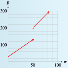

Subsection 5.3 Modeling with Piecewise Functions
Recall that a piecewise function is defined by different formulas on different portions of the \(x\)-axis.
Example 5.3.7.
In 2005, the income tax \(T(x)\) for a single taxpayer with a taxable income \(x\) under $150,000 was given by the following table.
| If taxpayer's income is... | Then the estimated tax is... | |||
| Over | But not over | Base tax | +Rate | Of the amount over |
| $0 | $7300 | $0 | 10% | $0 |
| $7300 | $29,700 | $730 | 15% | $7300 |
| $29,700 | $71,950 | $4090 | 25% | $29,700 |
| $71,950 | $150,150 | $14,652.50 | 28% | $71,950 |
Calculate the tax on incomes of $500, $29,700, and $40,000.
Write a piecewise function for \(T(x)\text{.}\)
Graph the function \(T(x)\text{.}\)
-
An income of \(x = \alert{500}\) is in the first tax bracket, so the tax is
\begin{equation*} T(\alert{500}) = 0 + 0.10(\alert{500}) = 50 \end{equation*}The income \(x = 29,700\) is just on the upper edge of the second tax bracket. The amount over $7300 is $29,700 - $7300, so
\begin{equation*} T(\alert{29,700}) = 730 + 0.15(\alert{29,700} - 7300) = 4090 \end{equation*}The income \(x = 40,000\) is in the third bracket, so the tax is
\begin{equation*} T (\alert{40,000}) = 4090 + 0.25(\alert{40,000} - 29,700) = 6665 \end{equation*} -
The first two columns of the table give the tax brackets, or the \(x\)-intervals on which each piece of the function is defined. In each bracket, the tax \(T(x)\) is given by
\begin{equation*} \text{Base tax} + \text{Rate}\cdot(\text{Amount over bracket base}) \end{equation*}For example, the tax in the second bracket is
\begin{equation*} T (x) = 730 + 0.15(x - 7300) \end{equation*}Writing the formulas for each of the four tax brackets gives us
\begin{equation*} T(x) = \begin{cases} 0.10x \amp 0 \le x \le 7300\\ 730 + 0.15(x - 7300) \amp 7300\lt x\le 29,700\\ 4090 + 0.25(x - 29,700) \amp 29,700\lt x\le 71,950\\ 14,652.50 + 0.28(x - 71,950)\amp 71,950\lt x\le 150,150\\ \end{cases} \end{equation*} -
The graph of \(T\) is piecewise linear.
- The first piece starts at the origin and has slope \(0.10\text{.}\)
- The second piece is in point-slope form, \(y = y_1 + m(x - x_1)\text{,}\) so it has slope \(0.15\) and passes through the point \((7300,~ 730)\text{.}\)
- Similarly, the third piece has slope \(0.25\) and passes through \((29,700,~~ 40,490)\text{.}\)
- The fourth piece has slope \(0.28\) and passes through \((71,950,~~ 14,652.5)\text{.}\)
You can check that for this function, all four pieces are connected at their endpoints, as shown below.

Checkpoint 5.3.8.
As part of a water conservation program, the utilities commission in Arid, New Mexico, establishes a two-tier system of monthly billing for residential water usage: The commission charges a $30 service fee plus $2 per hundred cubic feet (HCF) of water if you use 50 HCF or less, and a $50 service fee plus $3 per HCF of water if you use over 50 HCF (1 HCF of water is about 750 gallons).
Write a piecewise formula for the water bill, \(B(w)\text{,}\) as a function of the amount of water used, \(w\text{,}\) in HCF.
Graph the function \(B\text{.}\)
\(B(w) = \begin{cases} 30 + 2w \amp 0 \le w \le 50\\ 50 + 3w \amp w \gt 50\\ \end{cases}\)
- 